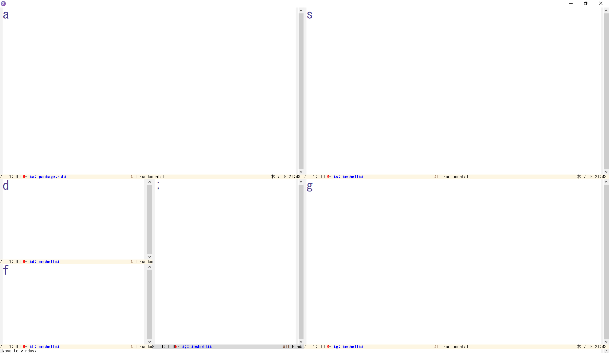

Emacs Package¶
switch-window¶

Emacsではウィンドウの切り替えコマンド other-window (C-x o) があります. しかし, other-window は, 次のウィンドウに切り替えていくコマンドです. ウィンドウを複数開いている場合には, 目的のウィンドウに辿り着くまで C-x o を連打する必要があります. これはかなりの手間です.
switch-window を導入すれば, この手間が軽減されます. 目的のウィンドウをキーボードで選択できるようになります. しかも, 各ウィンドウのサイズを変更する機能もついてきます.
設定¶
switch-windowコマンドを C-t に割り当てる例です.
(global-set-key (kbd "C-t") 'switch-window)
複数のウィンドウを開いている状態で C-t を実行すると, 各ウィンドウに数字が表示されます. この状態で数字をタイプすると, その数字のウィンドウに切り替わります.
これで十分かもしれませんが, もう少し使い勝手を良くしましょう. 数字ではなく, アルファベットで移動できるように変更します.
(setq switch-window-shortcut-style 'qwerty)
今度は, キーボードのホームポジションに並んでいるキー (asdfjkl;) で選択できるようになります.
ウィンドウが2個の場合は, わざわざ選択する必要はないので, アルファベットを出さないように変更します.
(setq switch-window-threshold 2)
アスキーアートや画像を使うこともできます.
(setq switch-window-shortcut-appearance 'asciiart) ;; アスキーアート
(setq switch-window-shortcut-appearance 'image) ;; 画像
ウィンドウを選択する画面で, ウィンドウのサイズを変更することができます. 例えば i をタイプすると, 上にあるウィンドウの高さが小さくなり, 下にあるウィンドウの高さが大きくなります.
その他, ウィンドウを選択する画面でのサイズ変更は, 以下の表のものがあります.
i |
上 |
k |
下 |
j |
左 |
l |
右 |
b |
全てのウィンドウのバランスを整える. |
他のウィンドウ操作も設定しましょう.
(global-set-key (kbd "C-x 1") 'switch-window-then-maximize)
(global-set-key (kbd "C-x 2") 'switch-window-then-split-below)
(global-set-key (kbd "C-x 3") 'switch-window-then-split-right)
(global-set-key (kbd "C-x 0") 'switch-window-then-delete)
(global-set-key (kbd "C-x 4 d") 'switch-window-then-dired)
(global-set-key (kbd "C-x 4 f") 'switch-window-then-find-file)
(global-set-key (kbd "C-x 4 m") 'switch-window-then-compose-mail)
(global-set-key (kbd "C-x 4 r") 'switch-window-then-find-file-read-only)
(global-set-key (kbd "C-x 4 C-f") 'switch-window-then-find-file)
(global-set-key (kbd "C-x 4 C-o") 'switch-window-then-display-buffer)
(global-set-key (kbd "C-x 4 0") 'switch-window-then-kill-buffer)